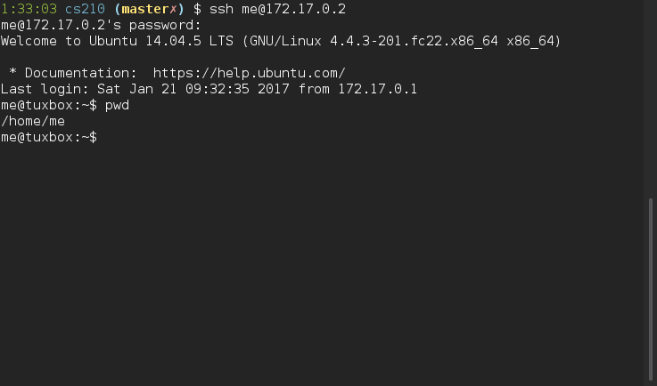

This lab manual uses several conventions to make explanations and instructions easier to understand.
Normal text will be set with the same type as in this sentence.
Names of utilities or commands and filenames are set in monospaced typeface. Files are also set in monostpace, and will typically look like this: /path/to/the/file.
Sometimes there is no need to express the full path of the file. In these cases the path portion (the /path/to/the/ part in the example) will be ommitted in the file reference.
In many exercises you will be presented with example output that show commands that need to be executed and a sample otput of its result. These are set in monospaced fonts and are enclosed in a box with a light gray background:
me@tuxbox:~$ date Sat Jan 21 07:18:52 UTC 2017 me@tuxbox:~$ uname Linux me@tuxbox:~$ exit logout Connection to 172.17.0.2 closed.
Commands or text that you need to enter, either within a paragraph or inside an example output box, are shown in bold typeface.
In the previous example, you are instructed to type the commands date, uname and exit.
Note that in the example output you are supposed to press the ENTER key after each command.
Example output will always omit the ENTER.
When you are required to press certain non-printable keystrokes, these will be set in monospace and enclosed in a frame. Examples of these are the ENTER, ESC, ALT, SHIFT and CTRL keys.
When multiple keys need to be pressed at the same time, this is denoted by the “+” symbol.
As an example, CTRL+v means to press the keys CTRL and v at the same time.
Sometimes a screen capture will be handy to explain a topic. These will be shown in a dark background, such as this:
Items that require special attention are highlited as notes:
Note
Note Example
This is an example of a note.
In this course, you will be asked to perform some tasks or answer some questions. These will be presented as a Worksheet note:
Worksheet